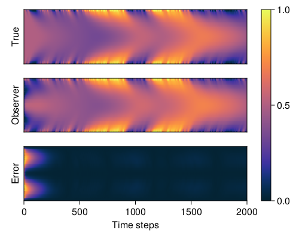

PDE Observer Design with REN
This example was first presented in Section VIII of Revay, Wang & Manchester (2021). Full example code can be found here.
This example considers learning a state observer for a reaction-diffusion PDE. See Observer Design with REN for a brief explanation of the theory, and Revay, Wang & Manchester (2021) for a detailed overview of the original problem.
1. Problem statement
We consider designing an observer for the following semi-linear reaction-diffusion partial differential equation.
\[\begin{aligned} \frac{\partial \xi(z,t)}{\partial t} &= \frac{\partial^2 \xi(z,t)}{\partial z^2}+R(\xi,z,t)\\ \xi (z,0)&=1\\ \xi(1,t)&=\xi(0,t)=b(t)\\ y&=g(\xi,z,t)\\ R(\xi, z, t)&=\frac{1}{2}\xi(1-\xi)(\xi-\frac{1}{2}) \end{aligned}\]
where the state $\xi(z,t)$ is a function of both spatial coordinate $z \in [0,1]$ and time. The boundary condition is considered to be a known input and we assume there is a single measurement taken from the center of the spatial domain: $y(t)=\xi(0.5,t).$ We discretize $z$ into $N$ intervals with $z^i=i\Delta z.$ Then the state of spatial coordinate is described by $\xi^i_t=\xi(z^i,t).$ The dynamics over a time period $\Delta t$ can be approximated using the finite difference $\frac{\partial \xi(z,t)}{\partial t} \approx \frac{\xi^i_{t+\Delta t}-\xi ^i_t}{\Delta t}.$ Substituting these into the reaction-diffusion PDEs, we can develop the state-space form:
\[\bar{\xi}_{t+\Delta t}=a_{RD}(\bar{\xi}_t,b_t), \quad y_t=c_{RD}(\bar{\xi}_t)\]
using LinearAlgebra
using Statistics
dtype = Float64
# Problem setup
nx = 51 # Number of states
n_in = 1 # Number of inputs
L = 10.0 # Size of spatial domain
sigma = 0.1 # Used to construct time step
# Discretise space and time
dx = L / (nx - 1)
dt = sigma * dx^2
# State dynamics and output functions f, g
function f(u0, d)
u, un = copy(u0), copy(u0)
for _ in 1:5
u = copy(un)
# FD approximation of heat equation
f_local(v) = v[2:end - 1, :] .* (1 .- v[2:end - 1, :]) .* ( v[2:end - 1, :] .- 0.5)
laplacian(v) = (v[1:end - 2, :] + v[3:end, :] - 2v[2:end - 1, :]) / dx^2
# Euler step for time
un[2:end - 1, :] = u[2:end - 1, :] + dt * (laplacian(u) + f_local(u) / 2 )
# Boundary condition
un[1:1, :] = d;
un[end:end, :] = d;
end
return u
end
g(u, d) = [d; u[end ÷ 2:end ÷ 2, :]]
2. Generate training data
We will generate training data for $t=0,\cdots,10^5\Delta t$ by simulating the system with $N=50$ intervals and $10^5$ time steps with the stochastic input $b_{t+1}=b_t+0.05w_t$ where $w_t\sim \mathcal{N}[0,1]$
using Random
# Generate simulated data
function get_data(npoints=1000; init=zeros)
X = init(dtype, nx, npoints)
U = init(dtype, n_in, npoints)
for t in 1:npoints-1
# Next state
X[:, t+1] = f(X[:, t], U[:, t])
# Next input bₜ
u_next = U[t] + 0.05f0*randn(dtype)
(u_next > 1) && (u_next = 1)
(u_next < 0) && (u_next = 0)
U[t + 1] = u_next
end
return X, U
end
X, U = get_data(100000; init=zeros)
xt = X[:, 1:end - 1]
xn = X[:, 2:end]
y = g(X, U)
# Store for the observer (inputs are inputs to observer)
input_data = [U; y][:, 1:end - 1]
batches = 200
data = Flux.Data.DataLoader((xn, xt, input_data), batchsize=batches, shuffle=true)3. Define a contracting REN
Now we can define a contracting REN to parameterise the observer mentioned above. We'll use a contracting REN with $q=500$ neurons, and output mapping as $[C_2,D_{21},D_{22}]=[I,0,0].$ DiffREN constructs a differentialble REN from its direct parametrization, i.e. ContractingRENParams (see the Package Overview for more detail) and updates the parameter every time the model is called.
using RobustNeuralNetworks
# Constuct a REN
nv = 500
nu = size(input_data, 1)
ny = nx
model_params = ContractingRENParams{dtype}(
nu, nx, nv, ny;
nl = tanh, ϵ=0.01,
polar_param = false,
output_map = false # Define the output mapping
)
model = DiffREN(model_params)4. Train the model
Now we can train the observer to give the prediction of system states. First, we need to define the loss function $\mathcal{L}(\tilde z) = \frac{1}{T} \sum^{T-1}_{t=0}|a_{RD}(\tilde{\xi}_t,\tilde{b}_t)-f_o(\tilde{\xi}_t,\tilde{b}_t,\tilde{y}_t)|^2,$ where $\tilde{z} = (\tilde{\xi}_t,\tilde{y}_t,\tilde{b}_t)$ is defined as the the training data generated from previous section. This cost funtion calculates the one step ahead prediction error.
using BSON
using Flux
using Formatting
# Define a loss function
function loss(model, xn, x, u)
xpred = model(x, u)[1]
return mean(norm(xpred[:, i] - xn[:, i]).^2 for i in 1:size(x, 2))
endWe use SGD with the Adam optimiser to train te REN. We use Flux.withgradient to calucate the gradient and the value of the loss function, then use Flux.update! to update the trainable parameters of the REN. We start from a learning rate of $10^{-3}$ and decrease it by powers of $10$ once when the loss function does not decrease. The training loop will stop when it reaches the minimal learning rate $10^{-7}$ or when we have reached $50$ training epochs. Once the model has been trained, we can save it for later with the BSON package.
# Train the model
function train_observer!(model, data; Epochs=50, lr=1e-3, min_lr=1e-7)
# Set up the optimiser
opt_state = Flux.setup(Adam(lr), model)
mean_loss, loss_std = [1e5], []
for epoch in 1:Epochs
batch_loss = []
for (xni, xi, ui) in data
# Get gradient and store loss
train_loss, ∇J = Flux.withgradient(loss, model, xni, xi, ui)
Flux.update!(opt_state, model, ∇J[1])
# Store losses for later
push!(batch_loss, train_loss)
printfmt("Epoch: {1:2d}\tTraining loss: {2:1.4E} \t lr={3:1.1E}\n", epoch, train_loss, lr)
end
# Print stats through epoch
println("------------------------------------------------------------------------")
printfmt("Epoch: {1:2d} \t mean loss: {2:1.4E}\t std: {3:1.4E}\n", epoch, mean(batch_loss), std(batch_loss))
println("------------------------------------------------------------------------")
push!(mean_loss, mean(batch_loss))
push!(loss_std, std(batch_loss))
# Check for decrease in loss
if mean_loss[end] >= mean_loss[end - 1]
println("Reducing Learning rate")
lr *= 0.1
Flux.adjust!(opt_state, lr)
(lr <= min_lr) && (return mean_loss, loss_std)
end
end
return mean_loss, loss_std
end
# Train and save the model
tloss, loss_std = train_observer!(model, data; Epochs=50, lr=1e-3, min_lr=1e-7)
bson("../results/pde_obsv.bson",
Dict(
"model" => model,
"training_loss" => tloss,
"loss_std" => loss_std
)
)Running the training loop can take an hour or two, so we've saved one in /examples/results/pde_obsv.bson. You can load it with the following code (you may need to change the file path depending on where you run this from).
using BSON
model = BSON.load("./examples/results/pde_obsv.bson")["model"]5. Evaluate the model
Now we can evaluate the performance of the learned observer using REN. We'll first generate some test data by simulating the system for $2000$ time steps, and calculate the prediction using the observer.
# Test observer
T = 2000
init = (args...) -> 0.5*ones(args...)
x, u = get_data(T, init=init)
y = [g(x[:, t:t], u[t]) for t in 1:T]
batches = 1
observer_inputs = [repeat([ui; yi], outer=(1, batches)) for (ui, yi) in zip(u, y)]
# Simulate the model through time
function simulate(model::AbstractREN, x0, u)
recurrent = Flux.Recur(model, x0)
output = recurrent.(u)
return output
end
x0 = init_states(model, batches)
xhat = simulate(model, x0, observer_inputs)
Xhat = reduce(hcat, xhat)Now we can plot the result of the ground truth and the prediction, as well as the error between the generated data and observer.
using CairoMakie
# Make a plot to show PDE and errors
function plot_heatmap(f1, xdata, i)
# Make and label the plot
xlabel = i < 3 ? "" : "Time steps"
ylabel = i == 1 ? "True" : (i == 2 ? "Observer" : "Error")
ax, _ = heatmap(f1[i,1], xdata', colormap=:thermal, axis=(xlabel=xlabel, ylabel=ylabel))
# Format the axes
ax.yticksvisible = false
ax.yticklabelsvisible = false
if i < 3
ax.xticksvisible = false
ax.xticklabelsvisible = false
end
xlims!(ax, 0, T)
end
f1 = Figure(resolution=(500,400))
plot_heatmap(f1, x, 1)
plot_heatmap(f1, Xhat[:, 1:batches:end], 2)
plot_heatmap(f1, abs.(x - Xhat[:, 1:batches:end]), 3)
Colorbar(f1[:,2], colorrange=(0,1),colormap=:thermal)
display(f1)In the plot, the x-axis is the time dimension and the y-axis is the spatial dimension. 